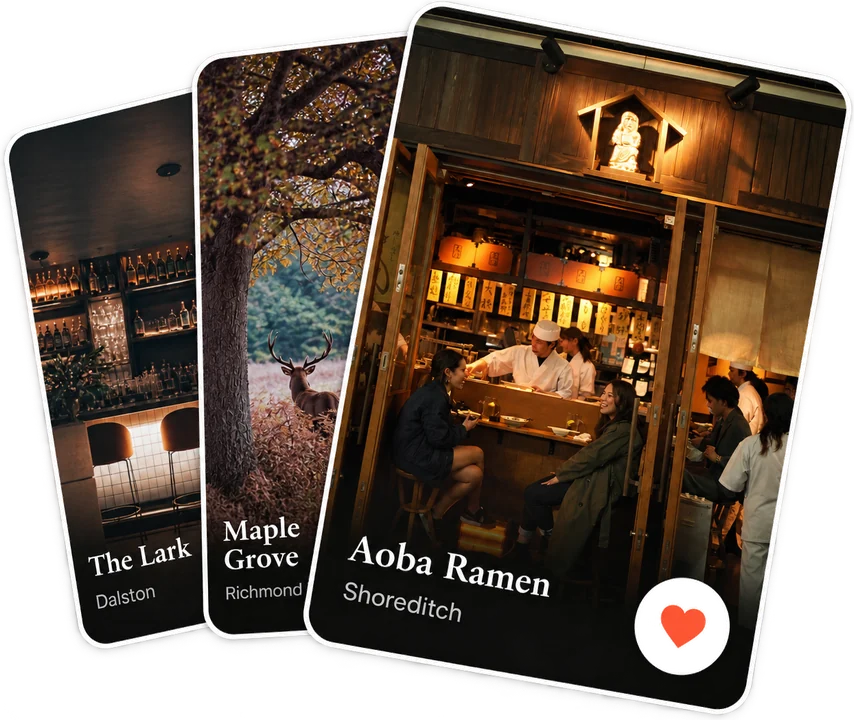
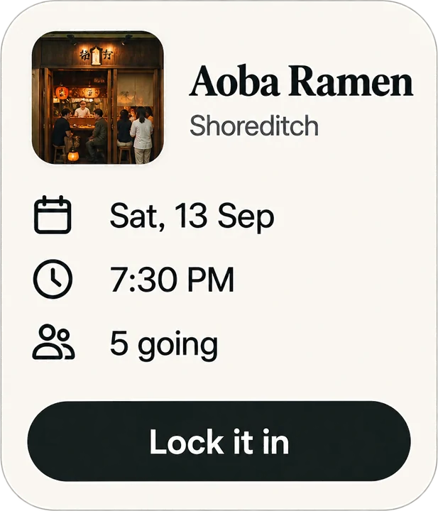
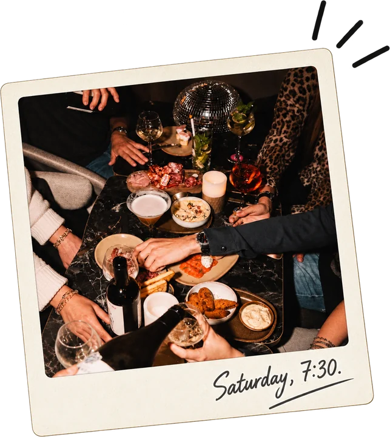
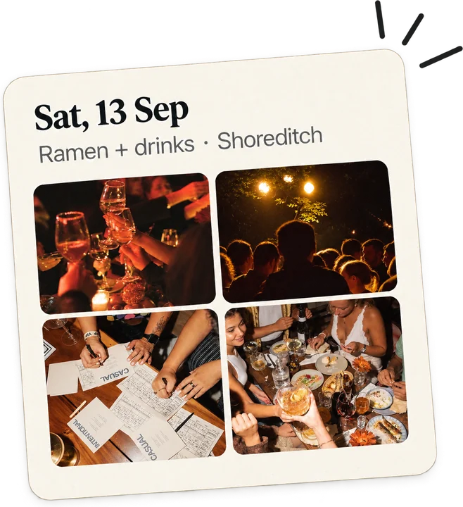
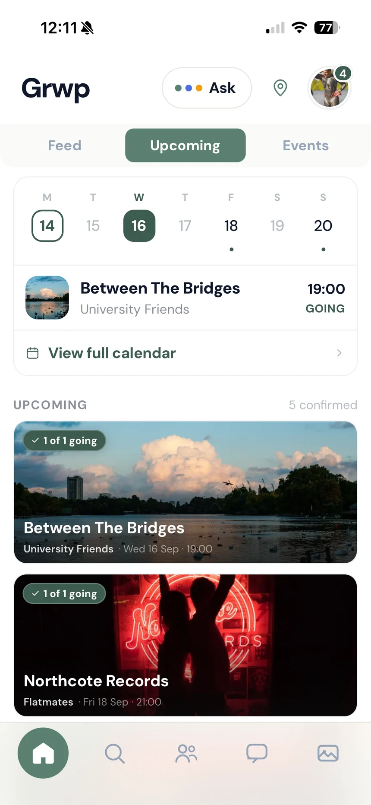
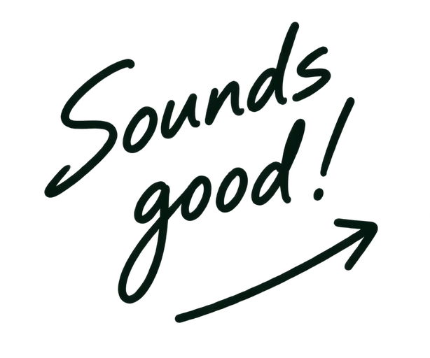
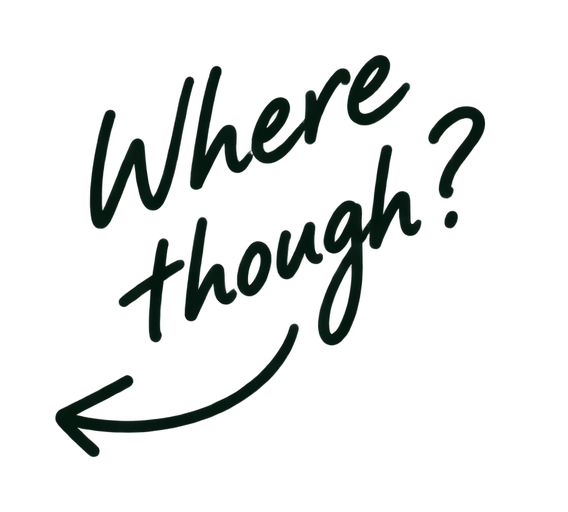
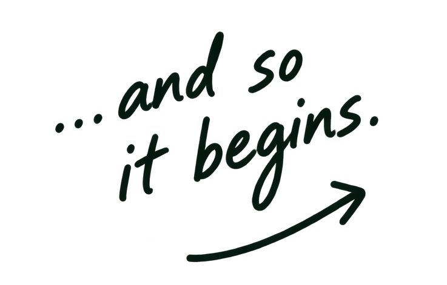
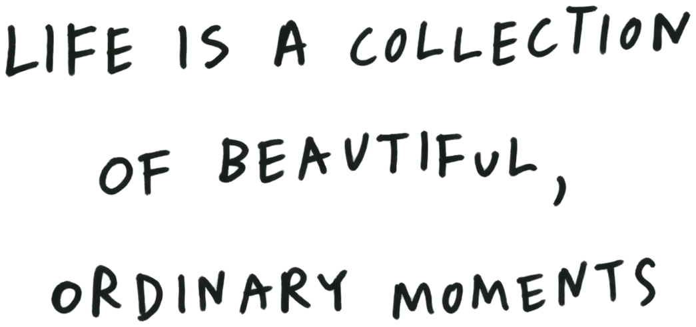
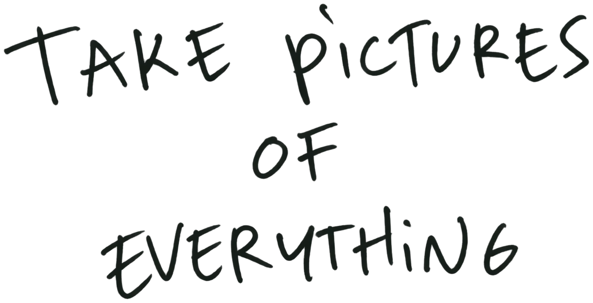

Everyone wants to do something. Nobody wants to organise it.
Discover the places you'll love, bring your people
You're on the list. We'll write once, when Grwp opens.
London born. Made for making plans.
Good people. Great plans.
From “we should” to Saturday at 7.

01
Discover
Grwp suggests places you'd love, in the areas you love. On your own or with your friends.
02
Match
When you and your friends like the same place, that's a match.

03
Plan
Pick a day and a time. You already know everyone loves the place, so the planning's done.

04
Meet
What Grwp's all about. Turn up. Real time spent with your people.

05
Remember
Every meet becomes a memory. Everyone adds their photos, so nothing gets lost.
How it works
Less chat.
More doing.
{{ p.title }}
{{ p.body }}
Find your next.

The problem
You know how this goes.
Someone says we should do something. Everyone agrees. Somebody has to pick what and when, and nobody does. Three weeks later it's still sat in the chat.
And when you do get out, it's the same handful of places — because finding something new takes an hour nobody has.
Same chaos. Different plan.



J
The Crew
6 people
{{ c.initial }}
{{ c.author }}
{{ c.text }}
•••
It happens every time
{{ p.title }}
{{ p.body }}
Discovery
Fifteen things a day, picked for you.
A café you've walked past for years. A gallery that's on this week. A Saturday morning run club. A restaurant ten minutes away you've never heard of.
You tap the ones you'd actually turn up to and skip the rest. Takes a minute. Tomorrow there's a new fifteen.
Fig & Thistle
Café · Haggerston · 12 min
Sundry
Gallery · Bethnal Green
Marsh Lane Run Club
Saturday · 9:00am
Peckham rooftop
Bar · Peckham · 9 min

Great people. More plans.
What we're not building
Social, minus the media.
No feed. No followers. No profile to keep up. Nobody sees what you liked — not your friends, not anyone.
Every other app wants your time. We'd rather you spent it somewhere else.
We measure success by the time you spend out of the app.
Your areas
Your areas, not central London.
Every other app ranks by popularity, and popularity means central. So everyone in London gets the same twenty places in the middle of town.
Grwp asks which parts of London you actually spend time in, then shows you what's good in them.
Pick an area
{{ areaLine }}
Groups
Nobody has to go first.
Suggesting something is a small risk — you put an idea forward and nobody replies. So on Grwp everyone taps on their own, privately.
When enough of your group likes the same thing it appears in the chat. Someone picks a day, everyone says if they're coming, and that's the plan.
Plans are better together.
Saturday lot
N
Anything happening this weekend?
Three of you liked this
Columbia Road
Market · Sunday, from 8:00am
Another day
I'm in
Perfect. Sunday it is.
Grwp AI
Six people, six different tastes.
Finding something you'd like is easy. Finding something six of you would all like is the actual problem.
Grwp AI sits in your group chat and knows what the group likes together. Ask it where you should go and it answers for all of you. When the chat's gone quiet, it puts something up.
N
Where should the six of us go on Sunday?
Grwp AI
All six of you have liked the market at Columbia Road. It's on Sunday morning, ten minutes from four of you, and there's coffee at the end of it.
Columbia Road
Market · Sunday
Put it to the group
Long lunch25 MAY
Columbia Road26 MAY
Saturday run1 JUN
Rooftop, late8 JUN
Memories
It happens, and then it's gone.
Six people took photos. They're on six phones. Somebody says they'll send them round and never does.
On Grwp, once you've been, the plan becomes a memory on its own. Where you went, who came, everyone's photos in one place.
Only the people who were there can see it. No profile, nothing to post — it's just kept.

Communities
Meeting people gets harder every year.
Your circle shrinks. Making new friends means turning up somewhere alone and hoping, and most people don't.
Communities on Grwp make it easy. Anyone can start one — you set what it is, where it meets, and who can join.